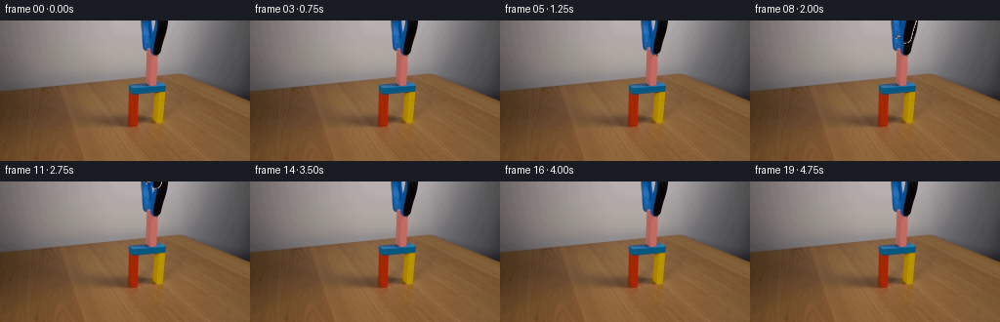
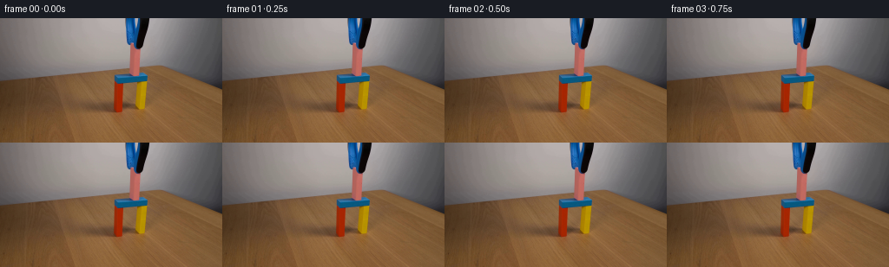
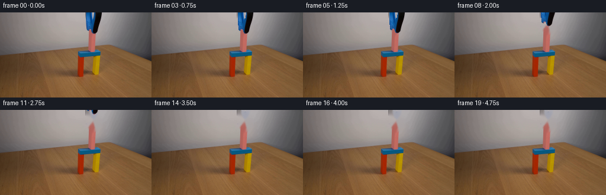
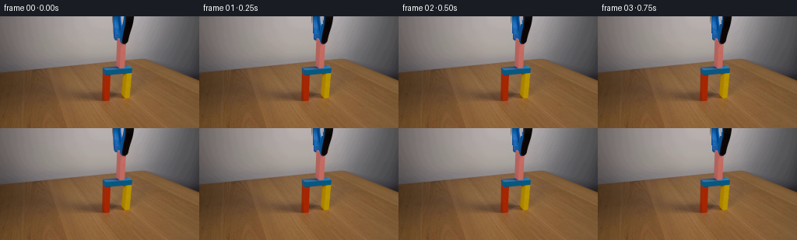
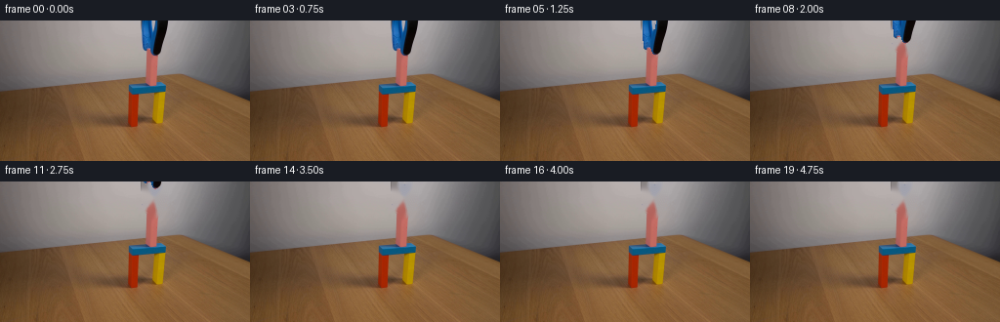
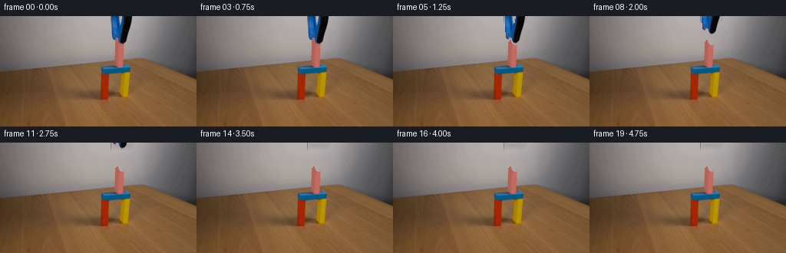
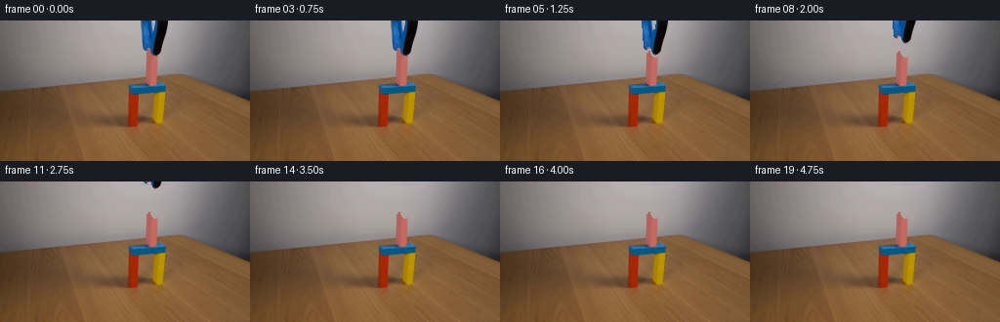

CODING AGENTS AS PIXEL WORLD MODELS
traex/DeepSeek-V4.1-Flash · 0172
点击播放 · 原生 RGB 像素
逐轮保存的候选
回放视频、检查图与代码变化。
每份候选均可单独播放。实际图片检查记录在下方工具轨迹中。
候选 01播放与检查图
点击播放 · 原生 RGB 像素


展开代码变化
--- 上一保存版本
+++ 本次保存版本
@@ -0,0 +1,90 @@
+from pathlib import Path
+
+import cv2
+import numpy as np
+from PIL import Image
+
+import artifact_io
+
+
+CASE_DIR = Path(__file__).resolve().parent
+FRAME_COUNT = 20
+WIDTH = 256
+HEIGHT = 144
+
+
+def tool_mask(frame):
+ """Find the blue/black grabber in the upper-center part of the frame."""
+ hsv = cv2.cvtColor(frame, cv2.COLOR_RGB2HSV)
+ hue, sat, val = hsv[..., 0], hsv[..., 1], hsv[..., 2]
+ yy, xx = np.indices((HEIGHT, WIDTH))
+
+ roi = (xx >= 142) & (xx <= 174) & (yy < 37)
+ blue_metal = (hue >= 92) & (hue <= 122) & (sat >= 42) & (val >= 18)
+ black_metal = (val < 58) & (xx >= 154)
+ mask = ((blue_metal | black_metal) & roi).astype(np.uint8)
+
+ # Keep the connected tool and close pinholes at the color boundary.
+ count, labels, stats, _ = cv2.connectedComponentsWithStats(mask, 8)
+ if count > 1:
+ component = 1 + int(np.argmax(stats[1:, cv2.CC_STAT_AREA]))
+ mask = (labels == component).astype(np.uint8)
+ mask = cv2.morphologyEx(mask, cv2.MORPH_CLOSE, np.ones((2, 2), np.uint8))
+ return mask
+
+
+def make_clean_plate(frame, mask):
+ """Remove the grabber while preserving the block and the fixed camera view."""
+ expanded = cv2.dilate(mask, np.ones((3, 3), np.uint8), iterations=1)
+ bgr = cv2.cvtColor(frame, cv2.COLOR_RGB2BGR)
+ clean = cv2.inpaint(bgr, expanded, 3.0, cv2.INPAINT_TELEA)
+ return cv2.cvtColor(clean, cv2.COLOR_BGR2RGB)
+
+
+def eased_retraction(frame_index):
+ """Hold briefly, release, then move the tool fully above the frame."""
+ start = 4
+ end = 15
+ if frame_index <= start:
+ return 0.0
+ if frame_index >= end:
+ return -42.0
+ u = (frame_index - start) / (end - start)
+ smooth = u * u * (3.0 - 2.0 * u)
+ return -42.0 * smooth
+
+
+def composite_tool(frame, clean, mask, offset_y):
+ """Translate the original tool pixels upward over the reconstructed wall."""
+ result = frame.copy()
+ src_y, src_x = np.nonzero(mask)
+ dst_y = np.rint(src_y + offset_y).astype(np.int32)
+ keep = (dst_y >= 0) & (dst_y < HEIGHT)
+ result[dst_y[keep], src_x[keep]] = clean[dst_y[keep], src_x[keep]]
+
+ src_y = src_y[keep]
+ src_x = src_x[keep]
+ dst_y = dst_y[keep]
+ result[dst_y, src_x] = frame[src_y, src_x]
+ return result
+
+
+def main():
+ original = np.asarray(Image.open(CASE_DIR / "first_frame.png").convert("RGB"))
+ assert original.shape == (HEIGHT, WIDTH, 3)
+
+ mask = tool_mask(original)
+ clean = make_clean_plate(original, mask)
+
+ frames = np.empty((FRAME_COUNT, HEIGHT, WIDTH, 3), dtype=np.uint8)
+ frames[0] = original
+ for index in range(1, FRAME_COUNT):
+ frames[index] = composite_tool(
+ original, clean, mask, eased_retraction(index)
+ )
+
+ artifact_io.save(frames, CASE_DIR)
+
+
+if __name__ == "__main__":
+ main()
候选 02播放与检查图
点击播放 · 原生 RGB 像素


展开代码变化
--- 上一保存版本
+++ 本次保存版本
@@ -56,11 +56,10 @@
def composite_tool(frame, clean, mask, offset_y):
"""Translate the original tool pixels upward over the reconstructed wall."""
- result = frame.copy()
+ result = clean.copy()
src_y, src_x = np.nonzero(mask)
dst_y = np.rint(src_y + offset_y).astype(np.int32)
keep = (dst_y >= 0) & (dst_y < HEIGHT)
- result[dst_y[keep], src_x[keep]] = clean[dst_y[keep], src_x[keep]]
src_y = src_y[keep]
src_x = src_x[keep]
候选 03播放与检查图
点击播放 · 原生 RGB 像素

展开代码变化
--- 上一保存版本
+++ 本次保存版本
@@ -56,7 +56,15 @@
def composite_tool(frame, clean, mask, offset_y):
"""Translate the original tool pixels upward over the reconstructed wall."""
+ if offset_y == 0:
+ return frame.copy()
+
+ # The inpainting radius also reconstructs the immediately adjacent wall.
+ # Keep those border pixels from the untouched plate; only the source mask
+ # and a one-pixel anti-aliased edge travel with the tool.
result = clean.copy()
+ expanded = cv2.dilate(mask, np.ones((3, 3), np.uint8), iterations=1)
+ result[expanded == 0] = frame[expanded == 0]
src_y, src_x = np.nonzero(mask)
dst_y = np.rint(src_y + offset_y).astype(np.int32)
keep = (dst_y >= 0) & (dst_y < HEIGHT)
候选 04播放与检查图
点击播放 · 原生 RGB 像素

展开代码变化
--- 上一保存版本
+++ 本次保存版本
@@ -36,9 +36,33 @@
def make_clean_plate(frame, mask):
"""Remove the grabber while preserving the block and the fixed camera view."""
expanded = cv2.dilate(mask, np.ones((3, 3), np.uint8), iterations=1)
- bgr = cv2.cvtColor(frame, cv2.COLOR_RGB2BGR)
- clean = cv2.inpaint(bgr, expanded, 3.0, cv2.INPAINT_TELEA)
- return cv2.cvtColor(clean, cv2.COLOR_BGR2RGB)
+ clean = frame.copy()
+
+ # The wall has a smooth horizontal lighting gradient. Fit each row from
+ # its visible margins, including the small gap between the gripper fingers.
+ xx = np.arange(WIDTH, dtype=np.float64)
+ for y in range(38):
+ samples = np.zeros(WIDTH, dtype=bool)
+ samples[132:185] = True
+ samples &= ~expanded[y].astype(bool)
+ if y >= 28:
+ samples[148:163] = False # the placed pink block
+ if samples.sum() < 5:
+ continue
+
+ sx = xx[samples]
+ design = np.stack((np.ones_like(sx), sx, sx * sx), axis=1)
+ for channel in range(3):
+ coefficients, *_ = np.linalg.lstsq(
+ design, frame[y, samples, channel], rcond=None
+ )
+ all_design = np.stack((np.ones_like(xx), xx, xx * xx), axis=1)
+ predicted = all_design @ coefficients
+ rows = expanded[y].astype(bool)
+ clean[y, rows, channel] = np.clip(
+ np.rint(predicted[rows]), 0, 255
+ ).astype(np.uint8)
+ return clean
def eased_retraction(frame_index):
候选 05播放与检查图
点击播放 · 原生 RGB 像素

展开代码变化
--- 上一保存版本
+++ 本次保存版本
@@ -29,6 +29,9 @@
if count > 1:
component = 1 + int(np.argmax(stats[1:, cv2.CC_STAT_AREA]))
mask = (labels == component).astype(np.uint8)
+ # The left finger has a dim anti-aliased rim that falls outside the
+ # saturated-metal threshold near the top edge of the image.
+ mask |= ((xx == 144) & (yy < 10) & (val < 155)).astype(np.uint8)
mask = cv2.morphologyEx(mask, cv2.MORPH_CLOSE, np.ones((2, 2), np.uint8))
return mask
可观测工具轨迹
实际执行的命令与返回图片。
命令 1exit 0
/bin/bash -c "pwd && rg --files -g '"'!*.mp4'"' -g '"'!*.mov'"' -g '"'!*.avi'"' | sed -n '1,160p'"
命令 2exit 0
/bin/bash -c "printf '%s\\n' '--- prompt.txt ---'; sed -n '1,240p' prompt.txt; printf '%s\\n' '--- GENERATION_RULES.md ---'; sed -n '1,300p' GENERATION_RULES.md"
命令 3exit 0
/bin/bash -c 'file first_frame.png; identify first_frame.png 2>/dev/null || true; ls -lah'
命令 4exit 0
/bin/bash -c "python - <<'PY'
from PIL import Image
import numpy as np
im=Image.open('first_frame.png').convert('RGB')
a=np.array(im)
print('size', im.size, 'shape', a.shape, 'dtype', a.dtype)
# global stats
print('min/max/mean/std', a.min(axis=(0,1)), a.max(axis=(0,1)), a.mean(axis=(0,1)).round(2), a.std(axis=(0,1)).round(2))
# quantized colors to 16 levels
q=(a//16)*16
cols, counts=np.unique(q.reshape(-1,3),axis=0,return_counts=True)
ix=np.argsort(counts)[::-1]
for c,n in zip(cols[ix[:40]],counts[ix[:40]]): print(tuple(c), int(n), round(n/(256*144)*100,2))
PY"命令 5exit 0
/bin/bash -c "python - <<'PY'
try:
import cv2; print('cv2',cv2.__version__)
except Exception as e: print('no cv2',e)
PY"命令 6exit 0
/bin/bash -c "sed -n '1,260p' artifact_io.py; sed -n '1,260p' player_template.html"
命令 7exit 0
/bin/bash -c "python - <<'PY'
from PIL import Image
import numpy as np
im=np.array(Image.open('first_frame.png').convert('RGB'))
h,w,_=im.shape
# coarse blocks 4x4 mean and classify hue/luma with chars
chars=' .:-=+*#%@'
for y0 in range(0,h,4):
line=''
for x0 in range(0,w,4):
b=im[y0:y0+4,x0:x0+4].mean((0,1))
r,g,bl=b
if r>150 and bl>120 and r>g*1.15: c='P' # pink
elif bl>r*1.25 and bl>g*1.05: c='B'
elif r>g*1.45 and g>bl*1.3: c='Y'
elif g>r*1.15 and g>bl*1.05: c='G'
elif r>g*1.15 and g>bl*1.15: c='O'
else:
v=(int(r)+int(g)+int(bl))/3
c=chars[min(9,int(v/26))]
line+=c
print(f'{y0:03d} '+line)
PY"命令 8exit 0
/bin/bash -c "python - <<'PY'
import cv2, numpy as np
from PIL import Image
a=np.array(Image.open('first_frame.png').convert('RGB'))
hsv=cv2.cvtColor(a,cv2.COLOR_RGB2HSV)
# report hue histogram for saturated pixels
mask=(hsv[:,:,1]>90)&(hsv[:,:,2]>40)
hist=np.bincount(hsv[:,:,0][mask],minlength=180)
for i in np.argsort(hist)[::-1][:30]: print(i,int(hist[i]))
print('sat quantile',np.quantile(hsv[:,:,1],[.5,.75,.9,.95,.99]))
# Components per hue ranges
ranges={'red':[(0,10),(170,180)],'orange':[(10,25)],'yellow':[(25,40)],'green':[(40,85)],'cyan':[(85,100)],'blue':[(100,130)],'purple':[(130,160)],'pink':[(160,175)]}
for name,rr in ranges.items():
m=np.zeros(a.shape[:2],np.uint8)
for lo,hi in rr:
m |= (((hsv[:,:,0]>=lo)&(hsv[:,:,0]<hi)&(hsv[:,:,1]>80)&(hsv[:,:,2]>35))*255).astype(np.uint8)
n,lab,stats,cents=cv2.connectedComponentsWithStats(m,8)
comps=[]
for j in range(1,n):
x,y,w,h,area=stats[j]
if area>=8: comps.append((area,(x,y,w,h),tuple(np.round(cents[j],1))))
print(name,sorted(comps,reverse=True)[:12])
PY"命令 9exit 0
/bin/bash -c "python - <<'PY'
from PIL import Image
import numpy as np
a=np.array(Image.open('first_frame.png').convert('RGB'))
# print average color by blocks 4x4 around x=120..170 y=0..75
for y in range(0,76,3):
vals=[]
for x in range(120,176,3):
b=a[y:y+3,x:x+3].mean((0,1)).astype(int)
vals.append('%02x%02x%02x'%tuple(b))
print(f'{y:03d}', ' '.join(vals))
PY"命令 10exit 0
/bin/bash -c "python - <<'PY'
from PIL import Image
import numpy as np
a=np.array(Image.open('first_frame.png').convert('RGB'))
# For x 130..170, report transitions on rows/cols using edge strength
# print per row color at x values compact
for y in range(20,75,1):
# pinkish pixels r>150 r>g*1.4 g>20
row=a[y]
m=(row[:,0]>145)&(row[:,0]>row[:,1]*1.3)&(row[:,0]>row[:,2]*1.05)
xs=np.flatnonzero(m)
# blue dark region x 128-170
m2=(row[:,2]>row[:,0]*1.2)&(row[:,2]>row[:,1]*1.05)&(row[:,2]>35)
xb=np.flatnonzero(m2)
if len(xs) or y%2==0:
print(y, 'pink', (xs.min(),xs.max(),len(xs)) if len(xs) else None, 'blue', (xb.min(),xb.max(),len(xb)) if len(xb) else None)
PY"命令 11exit 0
/bin/bash -c "python - <<'PY'
import cv2, numpy as np
from PIL import Image
a=np.array(Image.open('first_frame.png').convert('RGB'))
g=cv2.cvtColor(a,cv2.COLOR_RGB2GRAY)
e=cv2.Canny(g,30,90)
lines=cv2.HoughLinesP(e,1,np.pi/180,threshold=12,minLineLength=8,maxLineGap=3)
arr=[]
if lines is not None:
for l in lines[:,0]:
x1,y1,x2,y2=map(int,l)
if 110<=min(x1,x2) and max(x1,x2)<=190 and y1<115 and y2<115:
arr.append((round(((x2-x1)**2+(y2-y1)**2)**.5,1),x1,y1,x2,y2))
print('central lines', sorted(arr,reverse=True)[:80])
# color distribution crop
for y0,y1 in [(0,35),(35,65),(65,85),(85,110)]:
for x0,x1 in [(125,145),(145,165),(165,175)]:
b=a[y0:y1,x0:x1].reshape(-1,3)
hsv=cv2.cvtColor(b.reshape(-1,1,3),cv2.COLOR_RGB2HSV).reshape(-1,3)
m=hsv[:,1]>100
if m.sum():
hue=hsv[m,0]; val=hsv[m,2]
hist=np.bincount(hue,minlength=180)
tops=np.argsort(hist)[::-1][:5]
print((x0,x1,y0,y1),'satmean',b[m].mean(0).round().astype(int),'hue',[(int(h),int(hist[h])) for h in tops if hist[h]>0], 'Vmean',int(val.mean()))
PY"命令 12exit 0
/bin/bash -c "python - <<'PY'
from PIL import Image
import numpy as np, cv2
a=np.array(Image.open('first_frame.png').convert('RGB'))
h,w,_=a.shape
# 2x4 char map, categories from HSV in small blocks. classify each 2x4 pixel block based majority of pixel classes
hsv=cv2.cvtColor(a,cv2.COLOR_RGB2HSV)
# labels each pixel
H,S,V=hsv[:,:,0],hsv[:,:,1],hsv[:,:,2]
L=np.full((h,w),' ',dtype='<U1')
L[(S>100)&((H<=8)|(H>=172))&(V>100)]='P'
L[(S>80)&(H>=92)&(H<=115)&(V>35)]='B'
L[(S>80)&(H>=18)&(H<=30)&(V>80)]='Y'
L[(S>80)&(H>=31)&(H<=88)&(V>50)]='G'
L[(S>100)&(H>=9)&(H<=17)&(V>60)]='O'
# dark regions
L[(V<45)&(L==' ')]='#'
# gray levels
for lo,ch in [(170,'@'),(140,'%'),(110,'+'),(80,':'),(55,'.')]: L[(L==' ')&(V>=lo)&(V<lo+30)]=ch
# output x 100:190 at 2 px wide, y 0:115 at 2 rows
for y in range(0,116,2):
line=''
for x in range(100,192,2):
vals=L[y:y+2,x:x+2].ravel()
# choose priority if enough colored; else mode
u,c=np.unique(vals,return_counts=True)
line+=u[np.argmax(c)]
print(f'{y:03d} {line}')
PY"命令 13exit 0
/bin/bash -c "python - <<'PY'
from PIL import Image
import numpy as np
a=np.array(Image.open('first_frame.png').convert('RGB'))
# Print exact pixels every 1 x in central crop for select rows with RGB
for y in [29,30,34,35,36,40,45,55,60,62,64,65,66,67,68,69,70,72,73,74,75,76,77,80,100,105,106,107,108,109,110,111,112,113,114,115,120,124,128,132,136,140,143]:
print('ROW',y)
for x in range(124,177,1):
r,g,b=map(int,a[y,x])
print(f'{x}:{r:03d},{g:03d},{b:03d}',end=' ')
print()
PY"命令 14exit 0
/bin/bash -c "python - <<'PY'
from PIL import Image
import numpy as np, cv2
a=np.array(Image.open('first_frame.png').convert('RGB'))
hsv=cv2.cvtColor(a,cv2.COLOR_RGB2HSV)
# pixel masks around scene
H,S,V=hsv[:,:,0],hsv[:,:,1],hsv[:,:,2]
# show RGB std in block for x 130..170 y 70..110
for y0 in range(70,110,2):
vals=[]
for x0 in range(128,172,2):
b=a[y0:y0+2,x0:x0+2].reshape(-1,3).mean(0).astype(int)
vals.append('%02x%02x%02x'%tuple(b))
print(y0,' '.join(vals))
PY"命令 15exit 0
/bin/bash -c "python - <<'PY'
from PIL import Image
import numpy as np, cv2
a=np.array(Image.open('first_frame.png').convert('RGB'))
hsv=cv2.cvtColor(a,cv2.COLOR_RGB2HSV)
H,S,V=hsv[:,:,0],hsv[:,:,1],hsv[:,:,2]
for y in range(0,76):
s=''
for x in range(138,172):
h,ss,v=int(H[y,x]),int(S[y,x]),int(V[y,x]); r,g,b=map(int,a[y,x])
if ss>110 and ((h<9) or h>172) and v>100: c='P'
elif ss>80 and 92<=h<=118 and v>30: c='B'
elif ss>80 and 10<=h<=20 and v>60: c='O'
elif ss>80 and 21<=h<=31 and v>60: c='Y'
elif ss>80 and 32<=h<=88 and v>50: c='G'
elif v<35: c='#'
elif v<65: c='x'
elif v<95: c='+'
elif v<125: c='='
elif v<150: c='-'
elif v<170: c='.'
else: c=' '
s+=c
print(f'{y:03d} {s}')
print(' '+''.join(str((x//10)%10) for x in range(138,172)))
print(' '+''.join(str(x%10) for x in range(138,172)))
PY"命令 16exit 0
/bin/bash -c "python - <<'PY'
from PIL import Image
import numpy as np
a=np.array(Image.open('first_frame.png').convert('RGB'))
# hue/sat/value at key rows and detect dark grabber silhouette columns
import cv2
hsv=cv2.cvtColor(a,cv2.COLOR_RGB2HSV)
H,S,V=hsv[:,:,0],hsv[:,:,1],hsv[:,:,2]
for y in range(0,70,5):
# mean darkness in x 130..175, 5-wide windows
vals=[]
for x in range(125,176,5):
b=V[y:y+5,x:x+5].mean()
vals.append(int(b))
print(y, vals)
PY"命令 17exit 0
/bin/bash -c "python - <<'PY'
from PIL import Image
import numpy as np
a=np.array(Image.open('first_frame.png').convert('RGB'))
# Print 5x5 averages centered at grid to understand gate, use classification plus ascii colors
import cv2
hsv=cv2.cvtColor(a,cv2.COLOR_RGB2HSV); H,S,V=hsv[:,:,0],hsv[:,:,1],hsv[:,:,2]
# classify only highly saturated non background
for y in range(64,112,2):
line=''
for x in range(120,192,2):
b=a[y:y+2,x:x+2].reshape(-1,3).mean(0).astype(int)
r,g,bl=b; hh,ss,vv=cv2.cvtColor(np.uint8([[[r,g,bl]]]),cv2.COLOR_RGB2HSV)[0,0]
hh,ss,vv=map(int,(hh,ss,vv))
if ss>100 and ((hh<9) or hh>172) and vv>80: c='R' # red (pink maybe)
elif ss>80 and 92<=hh<=118 and vv>25: c='B'
elif ss>80 and 10<=hh<=20 and vv>50: c='O'
elif ss>80 and 21<=hh<=31 and vv>50: c='Y'
elif ss>80 and 32<=hh<=88 and vv>50: c='G'
elif ss>70 and 140<=hh<=172 and vv>70: c='M'
elif vv<35: c='#'
elif vv<65: c='x'
elif vv<100: c='+'
elif vv<130: c='='
elif vv<155: c='-'
elif vv<175: c='.'
else: c=' '
line+=c
print(f'{y:03d} {line}')
print(' '+''.join(str((x//10)%10) for x in range(120,192,2)))
print(' '+''.join(str((x//2)%10) for x in range(120,192,2)))
PY"命令 18exit 0
/bin/bash -c "python - <<'PY'
from PIL import Image
import numpy as np
a=np.array(Image.open('first_frame.png').convert('RGB'))
# find exact dark grabber pixel extents per row threshold V<30 and x 130:172
import cv2
v=cv2.cvtColor(a,cv2.COLOR_RGB2HSV)[:,:,2]
for y in range(0,40):
xs=np.flatnonzero(v[y,130:172]<30)+130
if len(xs): print(y, xs.min(),xs.max(),len(xs), list(xs))
PY"命令 19exit 0
/bin/bash -c "python - <<'PY'
from PIL import Image
import numpy as np
a=np.array(Image.open('first_frame.png').convert('RGB'))
# Analyze RGB stats of pink block ROI vs bg, and row/col edge exact
roi=a[35:67,149:162]
print('pink stats min max mean median',roi.reshape(-1,3).min(0),roi.reshape(-1,3).max(0),roi.reshape(-1,3).mean(0),np.median(roi.reshape(-1,3),axis=0))
# find bg patch around x 140..148 y 40..65
bg=a[40:65,138:148]
print('bg mean/std',bg.reshape(-1,3).mean(0),bg.reshape(-1,3).std(0))
# block mean per row / column
for y in range(32,70): print('row',y,a[y,150:161].mean(0).round(1))
PY"命令 20exit 0
/bin/bash -c "python - <<'PY'
import cv2, numpy as np
from PIL import Image
img=np.array(Image.open('first_frame.png').convert('RGB'))
hsv=cv2.cvtColor(img,cv2.COLOR_RGB2HSV)
H,S,V=hsv[:,:,0],hsv[:,:,1],hsv[:,:,2]
blue=((H>=88)&(H<=122)&(S>=45)&(V>=18)).astype(np.uint8)
dark=(V<=62).astype(np.uint8)
roi=np.zeros((144,256),np.uint8); roi[0:39,140:175]=1
grip=((blue|dark)&roi).astype(np.uint8)
grip=cv2.morphologyEx(grip,cv2.MORPH_CLOSE,np.ones((2,2),np.uint8))
grip=cv2.dilate(grip,np.ones((2,2),np.uint8),iterations=1)&roi
# don't let mask go deep into block except where it already dark/blue
# save color overlay
ov=img.copy(); ov[grip>0]=(ov[grip>0]*0.25+np.array([255,0,255])*0.75).astype(np.uint8)
Image.fromarray(ov).save('.tmp/grip_mask_overlay.png')
clean=cv2.inpaint(cv2.cvtColor(img,cv2.COLOR_RGB2BGR),grip,3,cv2.INPAINT_TELEA)
clean=cv2.cvtColor(clean,cv2.COLOR_BGR2RGB)
Image.fromarray(clean).save('.tmp/clean_plate.png')
print('grip pixels',grip.sum(),'blue',blue.sum(),'dark',dark.sum())
# ascii exact central crop with mask and clean
chars=' .:-=+*#%@'
for y in range(0,40,1):
s=''
for x in range(138,175):
if grip[y,x]: c='M'
else:
vv=V[y,x]
c=chars[min(9,int(vv/26))]
s+=c
print(f'{y:02d} {s}')
print('clean samples')
for y in [0,5,10,15,20,25,30,33,35,37]:
print(y,[tuple(map(int,clean[y,x])) for x in [145,150,155,160,165,170]])
PY"命令 21exit 0
/bin/bash -c "python - <<'PY'
import numpy as np, cv2
from PIL import Image
a=np.array(Image.open('first_frame.png').convert('RGB'))
hsv=cv2.cvtColor(a,cv2.COLOR_RGB2HSV); H,S,V=hsv[:,:,0],hsv[:,:,1],hsv[:,:,2]
# dark/blue mask (no dilation) output component stats
mask=(((V<65)|((H>=88)&(H<=122)&(S>45)&(V>18))) & (np.indices(V.shape)[1]>=138)&(np.indices(V.shape)[1]<175)&(np.indices(V.shape)[0]<40)).astype(np.uint8)
n,lab,stats,cents=cv2.connectedComponentsWithStats(mask,8)
print(n)
for i in range(1,n):
x,y,w,h,area=stats[i]
if area>5: print(area,(x,y,w,h),cents[i])
# precise mask maybe just object excluding blue background using blue highly saturated, and all dark at x>157
mask2=(((H>=95)&(H<=118)&(S>70)&(V>20)) | ((V<38)&(np.indices(V.shape)[1]>=155))) & (np.indices(V.shape)[1]>=138)&(np.indices(V.shape)[1]<175)&(np.indices(V.shape)[0]<40)
mask2=mask2.astype(np.uint8)
n,lab,stats,cents=cv2.connectedComponentsWithStats(mask2,8)
print('m2',n)
for i in range(1,n):
x,y,w,h,area=stats[i]
if area>5: print(area,(x,y,w,h),cents[i])
Image.fromarray(mask2*255).save('.tmp/mask2.png')
PY"命令 22exit 0
/bin/bash -c "python - <<'PY'
from PIL import Image
import numpy as np
a=np.array(Image.open('first_frame.png').convert('RGB'))
for y in [0,5,10,15,20,25,30,34]:
print('ROW',y)
for x in range(138,176):
r,g,b=map(int,a[y,x]); print(f'{x}:{r:03d},{g:03d},{b:03d}',end=' ')
print()
PY"命令 23exit 0
/bin/bash -c "python - <<'PY'
from PIL import Image
import numpy as np, cv2
a=np.array(Image.open('first_frame.png').convert('RGB'))
hsv=cv2.cvtColor(a,cv2.COLOR_RGB2HSV); H,S,V=hsv[:,:,0],hsv[:,:,1],hsv[:,:,2]
# pink mask based on hue and sat
m=(S>70)&(V>60)&((H<10)|(H>170))
for y in range(25,68):
xs=np.flatnonzero(m[y,145:166])+145
if len(xs): print(y,xs.min(),xs.max(),len(xs))
PY"命令 24exit 0
/bin/bash -c "python - <<'PY'
from PIL import Image
import numpy as np, cv2
a=np.array(Image.open('first_frame.png').convert('RGB'))
hsv=cv2.cvtColor(a,cv2.COLOR_RGB2HSV); H,S,V=hsv[:,:,0],hsv[:,:,1],hsv[:,:,2]
m=(S>70)&(V>60)&((H<10)|(H>170))
ys,xs=np.where(m & (np.indices(m.shape)[1]>=145)&(np.indices(m.shape)[1]<166)&(np.indices(m.shape)[0]>=25)&(np.indices(m.shape)[0]<68))
print('bbox',xs.min(),xs.max(),ys.min(),ys.max())
# run components
n,lab,stats,cents=cv2.connectedComponentsWithStats(m.astype(np.uint8),8)
for i in range(1,n):
x,y,w,h,area=stats[i]
if area>20: print(area,(x,y,w,h),cents[i])
PY"命令 25exit 0
/bin/bash -c "python - <<'PY'
from PIL import Image
import numpy as np, cv2
a=np.array(Image.open('first_frame.png').convert('RGB'))
hsv=cv2.cvtColor(a,cv2.COLOR_RGB2HSV); H,S,V=hsv[:,:,0],hsv[:,:,1],hsv[:,:,2]
# central gate analysis: mean colors and edges in grid coordinates
# Identify likely block faces by classifying saturation at pixels excluding red/pink
for y0 in range(66,110,4):
line=''
for x0 in range(120,194,4):
b=a[y0:y0+4,x0:x0+4].reshape(-1,3)
hh,ss,vv=cv2.cvtColor(b.reshape(-1,1,3),cv2.COLOR_RGB2HSV).reshape(-1,3).mean(0)
c='.'
if ss>100 and vv>60:
if hh<10 or hh>170: c='R'
elif hh<21: c='O'
elif hh<32: c='Y'
elif hh<89: c='G'
elif hh<125: c='B'
elif hh<160: c='P'
elif vv<60: c='#'
elif vv<100:c='+'
elif vv<135:c='='
elif vv<160:c='-'
line+=c
print(y0,line)
PY"命令 26exit 0
/bin/bash -c "python - <<'PY'
from PIL import Image
import numpy as np, cv2
a=np.array(Image.open('first_frame.png').convert('RGB'))
# Gate top row / block layout via high chroma edges; save enlarged nearest crops for maybe terminal sixel no. derive geometric masks
# print exact averages of blocks guesses
regions={
'pink':(149,29,162,67),
'blue_beam':(132,65,169,73),
'left_red':(130,74,142,108),
'middle_brown':(142,74,157,106),
'right_yellow':(156,74,168,107),
'orange_left':(112,75,132,108),
'orange_right':(168,75,188,108),
}
for name,(x0,y0,x1,y1) in regions.items():
b=a[y0:y1,x0:x1].reshape(-1,3)
print(name,'mean',b.mean(0).round(1),'median',np.median(b,axis=0),'std',b.std(0).round(1))
PY"命令 27exit 1
/bin/bash -c "python - <<'PY'
from PIL import Image
import numpy as np, cv2
a=np.array(Image.open('first_frame.png').convert('RGB'))
# crop nearest scale save tmp for possible computer image inspect not available. print grayscale ascii of central gate at 1 px, 1 char per pixel rows 62..110 x 120..190
g=cv2.cvtColor(a,cv2.COLOR_RGB2GRAY)
chars=' .:-=+*#%@'
for y in range(62,112):
s=''
for x in range(118,194):
c=chars[min(9,g[y,x]*10//256)]
s+=c
print(f'{y:03d} {s}')
PY"命令 28exit 0
/bin/bash -c "python - <<'PY'
from PIL import Image
import numpy as np, cv2
a=np.array(Image.open('first_frame.png').convert('RGB'))
g=cv2.cvtColor(a,cv2.COLOR_RGB2GRAY)
chars=' .:-=+*#%@'
for y in range(62,112):
s=''
for x in range(118,194):
c=chars[min(9,int(g[y,x])*10//256)]
s+=c
print(f'{y:03d} {s}')
PY"命令 29exit 0
/bin/bash -c "python - <<'PY'
from PIL import Image
import numpy as np, cv2
a=np.array(Image.open('first_frame.png').convert('RGB'))
# candidate segmentation by manually expected blocks, print dominant colors at grid
for y in [75,80,85,90,95,100,104]:
print('ROW',y)
for x in range(118,194,4):
b=a[y:y+4,x:x+4].reshape(-1,3).mean(0).round().astype(int)
print(f'{x}:{b[0]:03d},{b[1]:03d},{b[2]:03d}',end=' ')
print()
PY"命令 30exit 0
/bin/bash -c "python - <<'PY'
from PIL import Image
import numpy as np, cv2
a=np.array(Image.open('first_frame.png').convert('RGB'))
# central crop difference map around top; print color clusters using kmeans on pixels x 120:190 y 0:115
roi=a[0:115,120:190].reshape(-1,3)
# simple kmeans
crit=(cv2.TERM_CRITERIA_EPS+cv2.TERM_CRITERIA_MAX_ITER,100,0.2)
_,labels,centers=cv2.kmeans(roi.astype(np.float32),16,None,crit,5,cv2.KMEANS_PP_CENTERS)
counts=np.bincount(labels.ravel())
for i in np.argsort(counts)[::-1]:
print(int(counts[i]),tuple(np.round(centers[i]).astype(int)))
PY"命令 31exit 0
/bin/bash -c "python - <<'PY'
from PIL import Image
import numpy as np, cv2
a=np.array(Image.open('first_frame.png').convert('RGB'))
# mask pure blue grabber by HSV and save stats per column row
hsv=cv2.cvtColor(a,cv2.COLOR_RGB2HSV); H,S,V=hsv[:,:,0],hsv[:,:,1],hsv[:,:,2]
blue=(H>=95)&(H<=118)&(S>75)&(V>20)
dark=V<38
# print blue row ranges and dark row ranges
for y in range(0,40):
xb=np.flatnonzero(blue[y,138:175])+138
xd=np.flatnonzero(dark[y,138:175])+138
print(f'{y:02d}', 'blue', (xb.min(),xb.max(),len(xb)) if len(xb) else '-', 'dark',(xd.min(),xd.max(),len(xd)) if len(xd) else '-')
PY"命令 32exit 0
/bin/bash -c "python generate.py && python - <<'PY'
import numpy as np
from PIL import Image
from pathlib import Path
a=np.asarray(Image.open('first_frame.png').convert('RGB'))
f=np.asarray(Image.open('frames/00.png').convert('RGB'))
print('frame0 identical',np.array_equal(a,f))
# print masks and changed bbox per frame, plus mean abs diff from prior
prev=a
for i in range(20):
im=np.asarray(Image.open(f'frames/{i:02d}.png').convert('RGB'))
diff=np.abs(im.astype(np.int16)-prev.astype(np.int16))
ys,xs=np.where(np.any(diff>0,axis=2))
print(i,'changed',len(xs),'bbox', (xs.min(),ys.min(),xs.max(),ys.max()) if len(xs) else None,'mae',diff.mean().round(3))
prev=im
PY"命令 33exit 0
/bin/bash -c "command -v ffmpeg || true; command -v ffprobe || true; ls -lah frames | sed -n '1,30p'; ls -lah pixels.npz index.html inspection.png transition_check.png"
命令 34exit 0
/bin/bash -c "python - <<'PY'
import numpy as np, json
from PIL import Image
p=np.load('pixels.npz')['pixels']
print('pixels.npz',p.shape,p.dtype,int(p.min()),int(p.max()))
print('frames',len(list(__import__('pathlib').Path('frames').glob('*.png'))))
print('inspection',Image.open('inspection.png').size)
print('transition',Image.open('transition_check.png').size)
print('html bytes',len(open('index.html','rb').read()))
# Pink block interior should remain fixed after frame 0; tool should clear by frame 14.
for i in [0,4,7,10,13,14,19]:
a=np.asarray(Image.open(f'frames/{i:02d}.png').convert('RGB'))
print(i,'pink mean',a[38:62,152:160].mean((0,1)).round(1),'tool-dark-count',int(((a[:36,145:172].mean(2)<45)).sum()))
PY"命令 35exit 0
/bin/bash -c "python - <<'PY'
import cv2, numpy as np
from PIL import Image
a=np.array(Image.open('first_frame.png').convert('RGB'))
# tool mask summary bbox, inspect residual via optical tool pixels in final
for i in [0,5,8,10,12,14,19]:
im=np.array(Image.open(f'frames/{i:02d}.png').convert('RGB'))
hsv=cv2.cvtColor(im,cv2.COLOR_RGB2HSV)
H,S,V=hsv[:,:,0],hsv[:,:,1],hsv[:,:,2]
m=((H>=95)&(H<=118)&(S>75)&(V>20))|((V<38)&(np.indices(V.shape)[1]>=155))
m &= (np.indices(V.shape)[0]<40)&(np.indices(V.shape)[1]>=142)&(np.indices(V.shape)[1]<175)
ys,xs=np.where(m)
print(i, 'mask',len(xs), (xs.min(),ys.min(),xs.max(),ys.max()) if len(xs) else None)
PY"命令 36exit 0
/bin/bash -c "python - <<'PY'
import importlib.util, numpy as np
from PIL import Image
spec=importlib.util.spec_from_file_location('g','generate.py'); g=importlib.util.module_from_spec(spec); spec.loader.exec_module(g)
a=np.asarray(Image.open('first_frame.png').convert('RGB'))
m=g.tool_mask(a); ys,xs=np.where(m)
print('mask bbox',xs.min(),ys.min(),xs.max(),ys.max(),'count',len(xs))
print('per row')
for y in range(0,40):
xx=np.where(m[y])[0]
if len(xx): print(y,xx.min(),xx.max(),len(xx))
PY"命令 37exit 1
/bin/bash -c "python - <<'PY'
import importlib.util, numpy as np, cv2
from PIL import Image
spec=importlib.util.spec_from_file_location('g','generate.py'); g=importlib.util.module_from_spec(spec); spec.loader.exec_module(g)
a=np.array(Image.open('first_frame.png').convert('RGB'))
m=g.tool_mask(a); clean=g.make_clean_plate(a,m)
# Show remaining tool-like pixels in clean around tool area
hsv=cv2.cvtColor(clean,cv2.COLOR_RGB2HSV); H,S,V=hsv[:,:,0],hsv[:,:,1],hsv[:,:,2]
bm=((H>=95)&(H<=118)&(S>75)&(V>20))|((V<38)&(np.indices(V.shape)[1]>=155))
bm &= (np.indices(V.shape)[0]<40)&(np.indices(V.shape)[1]>=142)&(np.indices(V.shape)[1]<175)
print('resid',bm.sum())
ys,xs=np.where(bm)
print(xs.min(),ys.min(),xs.max(),ys.max())
# rgb at grid sample clean
for y in range(0,37,3):
print(y,[tuple(clean[y,x]) for x in range(146,173,4)])
PY"命令 38exit 0
/bin/bash -c "python - <<'PY'
import importlib.util, numpy as np, cv2
from PIL import Image
spec=importlib.util.spec_from_file_location('g','generate.py'); g=importlib.util.module_from_spec(spec); spec.loader.exec_module(g)
a=np.array(Image.open('first_frame.png').convert('RGB'))
m=g.tool_mask(a); clean=g.make_clean_plate(a,m)
for y in range(0,37,3):
print(y,[tuple(map(int,clean[y,x])) for x in range(146,173,4)])
# mask pixels that still differ significantly from locally inpainted; check weird saturation
roi=clean[:37,140:176]
print('clean ROI std',roi.std((0,1)))
PY"命令 39exit 0
/bin/bash -c "python - <<'PY'
import importlib.util, numpy as np
from PIL import Image
spec=importlib.util.spec_from_file_location('g','generate.py'); g=importlib.util.module_from_spec(spec); spec.loader.exec_module(g)
a=np.array(Image.open('first_frame.png').convert('RGB'))
m=g.tool_mask(a); clean=g.make_clean_plate(a,m)
final=np.array(Image.open('frames/14.png').convert('RGB'))
d=np.abs(final.astype(int)-clean.astype(int)).max(2)
ys,xs=np.where((d>3)&(np.indices(d.shape)[0]<42)&(np.indices(d.shape)[1]>=138)&(np.indices(d.shape)[1]<176))
print('diff pixels',len(xs))
for y in range(0,42):
xx=xs[ys==y]
if len(xx): print(y,xx.min(),xx.max(),len(xx),int(d[y,xx].max()))
PY"命令 40exit 0
/bin/bash -c "python - <<'PY'
import numpy as np
from PIL import Image
for i in [0,4,7,10,13,14,19]:
im=np.array(Image.open(f'frames/{i:02d}.png').convert('RGB'))
# count saturated blue in upper ROI
import cv2
h=cv2.cvtColor(im,cv2.COLOR_RGB2HSV); H,S,V=h[:,:,0],h[:,:,1],h[:,:,2]
m=(H>=95)&(H<=118)&(S>75)&(V>20)&(np.indices(H.shape)[0]<40)&(np.indices(H.shape)[1]>=142)&(np.indices(H.shape)[1]<175)
print(i,m.sum())
PY"命令 41exit 0
/bin/bash -c "python - <<'PY'
import numpy as np, cv2
from PIL import Image
for i in [0,5,7,10,12,14,19]:
im=np.array(Image.open(f'frames/{i:02d}.png').convert('RGB'))
hsv=cv2.cvtColor(im,cv2.COLOR_RGB2HSV); H,S,V=hsv[:,:,0],hsv[:,:,1],hsv[:,:,2]
# Background in ROI should be near neutral: saturation low. report saturated blue/pink pixels upper.
yy,xx=np.indices(H.shape)
blue=(H>=95)&(H<=118)&(S>75)&(V>20)&(yy<40)&(xx>=142)&(xx<175)
ys,xs=np.where(blue)
print(i,len(xs), (xs.min(),ys.min(),xs.max(),ys.max()) if len(xs) else None)
# output unique colors at pixel 160,10 etc
print([tuple(im[y,x]) for x,y in [(150,5),(155,5),(160,5),(165,5),(170,5),(160,15),(160,25)]])
PY"命令 42exit 0
/bin/bash -c "python - <<'PY'
import importlib.util, numpy as np, cv2
from PIL import Image
spec=importlib.util.spec_from_file_location('g','generate.py'); g=importlib.util.module_from_spec(spec); spec.loader.exec_module(g)
a=np.array(Image.open('first_frame.png').convert('RGB'))
m=g.tool_mask(a); c=g.make_clean_plate(a,m)
print('original clean pixels')
for x,y in [(150,5),(155,5),(160,5),(165,5),(170,5),(160,15),(160,25)]:
print((x,y),'orig',tuple(a[y,x]),'clean',tuple(c[y,x]),'mask',m[y,x])
PY"命令 43exit 0
/bin/bash -c "python - <<'PY'
import importlib.util, numpy as np
from PIL import Image
spec=importlib.util.spec_from_file_location('g','generate.py'); g=importlib.util.module_from_spec(spec); spec.loader.exec_module(g)
a=np.array(Image.open('first_frame.png').convert('RGB'))
m=g.tool_mask(a); c=g.make_clean_plate(a,m)
for i in range(20):
print(i,g.eased_retraction(i), 'f', tuple(np.array(Image.open(f'frames/{i:02d}.png'))[5,160]))
PY"命令 44exit 0
/bin/bash -c "python generate.py && python - <<'PY'
import numpy as np, cv2
from PIL import Image
from pathlib import Path
orig=np.asarray(Image.open('first_frame.png').convert('RGB'))
prev=orig
for i in range(20):
im=np.asarray(Image.open(f'frames/{i:02d}.png').convert('RGB'))
hsv=cv2.cvtColor(im,cv2.COLOR_RGB2HSV); H,S,V=hsv[:,:,0],hsv[:,:,1],hsv[:,:,2]
yy,xx=np.indices(H.shape)
tool=((H>=95)&(H<=118)&(S>75)&(V>20))|((V<38)&(xx>=155))
tool &= (yy<40)&(xx>=142)&(xx<175)
diff=np.abs(im.astype(np.int16)-prev.astype(np.int16))
changed=int(np.any(diff>0,axis=2).sum())
print(i,'changed',changed,'tool-like',int(tool.sum()),'pink',tuple(im[50,155]),'top',tuple(im[5,160]))
prev=im
print('frame0 identical',np.array_equal(orig,np.asarray(Image.open('frames/00.png').convert('RGB'))))
print('pixels shape',np.load('pixels.npz')['pixels'].shape)
PY"命令 45exit 0
/bin/bash -c "python - <<'PY'
import numpy as np, cv2
from PIL import Image
for i in [0,4,5,6,7,8,9,10,11,12,13,14,19]:
im=np.array(Image.open(f'frames/{i:02d}.png').convert('RGB'))
# blue/black tool count in x 142:175 y 0:40 using neutral-inpaint difference; exact signature: dark or blue metal
hsv=cv2.cvtColor(im,cv2.COLOR_RGB2HSV); H,S,V=hsv[:,:,0],hsv[:,:,1],hsv[:,:,2]
yy,xx=np.indices(H.shape)
m=(((H>=95)&(H<=118)&(S>75)&(V>20))|((V<38)&(xx>=155)))&(yy<40)&(xx>=142)&(xx<175)
ys,xs=np.where(m)
print(i,len(xs), (xs.min(),ys.min(),xs.max(),ys.max()) if len(xs) else None)
PY"命令 46exit 0
/bin/bash -c "python - <<'PY'
import importlib.util, numpy as np
from PIL import Image
spec=importlib.util.spec_from_file_location('g','generate.py'); g=importlib.util.module_from_spec(spec); spec.loader.exec_module(g)
a=np.array(Image.open('first_frame.png').convert('RGB'))
m=g.tool_mask(a)
for i in [0,4,5,6]:
out=g.composite_tool(a,g.make_clean_plate(a,m),m,g.eased_retraction(i))
d=np.abs(out.astype(int)-a.astype(int)).max(2)
ys,xs=np.where(d>0)
print(i,len(xs), (xs.min(),ys.min(),xs.max(),ys.max()) if len(xs) else None)
PY"命令 47exit 0
/bin/bash -c "python - <<'PY'
import importlib.util, numpy as np
from PIL import Image
spec=importlib.util.spec_from_file_location('g','generate.py'); g=importlib.util.module_from_spec(spec); spec.loader.exec_module(g)
a=np.array(Image.open('first_frame.png').convert('RGB')); m=g.tool_mask(a); c=g.make_clean_plate(a,m)
out=g.composite_tool(a,c,m,0)
d=np.abs(out.astype(int)-a.astype(int)).max(2); ys,xs=np.where(d>0)
print('pixels',len(xs))
for y in range(0,40):
xx=xs[ys==y]
if len(xx): print(y,xx.min(),xx.max(),len(xx),[(int(x),tuple(out[y,x]),tuple(a[y,x]),int(m[y,x])) for x in xx[:8]])
PY"命令 48exit 0
/bin/bash -c "python generate.py && python - <<'PY'
import numpy as np, cv2
from PIL import Image
orig=np.array(Image.open('first_frame.png').convert('RGB'))
prev=orig
print('frame0 identical',np.array_equal(orig,np.array(Image.open('frames/00.png').convert('RGB'))))
for i in range(20):
im=np.array(Image.open(f'frames/{i:02d}.png').convert('RGB'))
hsv=cv2.cvtColor(im,cv2.COLOR_RGB2HSV); H,S,V=hsv[:,:,0],hsv[:,:,1],hsv[:,:,2]
yy,xx=np.indices(H.shape)
tool=((H>=95)&(H<=118)&(S>75)&(V>20))|((V<38)&(xx>=155))
tool &= (yy<40)&(xx>=142)&(xx<175)
changed=int(np.any(im"'!=prev,axis=2).sum())
print(i,'"'changed',changed,'tool-like',int(tool.sum()),'top',tuple(im[5,160]))
prev=im
PY"命令 49exit 0
/bin/bash -c "python - <<'PY'
import numpy as np, cv2, json, re
from PIL import Image
from pathlib import Path
# Contract checks
imgs=sorted(Path('frames').glob('*.png'))
assert len(imgs)==20
arr=np.stack([np.asarray(Image.open(p).convert('RGB')) for p in imgs])
assert arr.shape==(20,144,256,3) and arr.dtype==np.uint8
orig=np.asarray(Image.open('first_frame.png').convert('RGB'))
print('frame0_exact', bool(np.array_equal(arr[0],orig)))
packed=np.load('pixels.npz')['pixels']
print('pixels',packed.shape,packed.dtype)
# alpha/palette checks
print('unique_rgb_frame0',len(np.unique(arr[0].reshape(-1,3),axis=0)))
# local seam check in fully revealed frame vs neighbor wall
im=arr[19]
roi=im[0:37,142:175].astype(np.float32)
gx=cv2.Sobel(roi,cv2.CV_32F,1,0,ksize=3)
gy=cv2.Sobel(roi,cv2.CV_32F,0,1,ksize=3)
print('reveal_gradient_p99',round(float(np.quantile(np.hypot(gx,gy),.99)),2),'max',round(float(np.hypot(gx,gy).max()),2))
# report diff stats
for i in [4,5,8,10,12,13,19]:
d=np.abs(arr[i].astype(np.int16)-arr[i-1].astype(np.int16))
ys,xs=np.where(np.any(d,axis=2))
print('frame',i,'changed',len(xs),'bbox',(int(xs.min()),int(ys.min()),int(xs.max()),int(ys.max())) if len(xs) else None)
print('html_has_payload', 'const DATA=' in Path('index.html').read_text())
PY"命令 50exit 0
/bin/bash -c "git status --short && git diff -- generate.py | sed -n '1,260p'"
命令 51exit 0
/bin/bash -c "python - <<'PY'
from pathlib import Path
from PIL import Image
import numpy as np, json
# Replay the lightweight browser delta decoder in Python to catch corrupt packets.
html=Path('index.html').read_text()
m=html.index('const DATA=')+len('const DATA=')
end=html.index(',W=DATA.width',m)
data=json.loads(html[m:end])
import base64
first=np.frombuffer(base64.b64decode(data['first']),dtype='<u4').reshape(144,256)
frames=[first]
for enc in data['deltas']:
f=frames[-1].copy()
p=np.frombuffer(base64.b64decode(enc),dtype='<u4')
i=0
while i<len(p):
start=int(p[i]); count=int(p[i+1]); f.reshape(-1)[start:start+count]=p[i+2:i+2+count]; i+=2+count
frames.append(f)
raw=np.stack([np.asarray(Image.open(f'frames/{i:02d}.png').convert('RGB')) for i in range(20)])
packed=(raw[:,:,:,0].astype(np.uint32)<<16)|(raw[:,:,:,1].astype(np.uint32)<<8)|raw[:,:,:,2]
print('delta_replay_exact',np.array_equal(np.stack(frames),packed.transpose(1,2,0)))
print('caption',data['caption'])
print('spec',data['width'],data['height'],data['frames'],data['fps'],'audio',data['audio'])
PY"命令 52exit 0
/bin/bash -c "python - <<'PY'
from pathlib import Path
from PIL import Image
import numpy as np, json, base64
html=Path('index.html').read_text(); m=html.index('const DATA=')+len('const DATA='); end=html.index(',W=DATA.width',m); data=json.loads(html[m:end])
def unpack(s): return np.frombuffer(base64.b64decode(s),dtype='<u4')
frames=[unpack(data['first'])]
for enc in data['deltas']:
f=frames[-1].copy(); p=unpack(enc); i=0
while i<len(p):
start=int(p[i]); count=int(p[i+1]); f[start:start+count]=p[i+2:i+2+count]; i+=2+count
frames.append(f)
raw=np.stack([np.asarray(Image.open(f'frames/{i:02d}.png').convert('RGB')) for i in range(20)])
packed=(raw[:,:,:,0].astype(np.uint32)<<16)|(raw[:,:,:,1].astype(np.uint32)<<8)|raw[:,:,:,2]
packed=packed.transpose(1,2,0).reshape(20,-1)
for i in range(20):
diff=np.flatnonzero(frames[i]"'!=packed[i])
if len(diff): print(i,len(diff),diff[:10],frames[i][diff[:5]],packed[i][diff[:5]])
print('"'shape',frames[0].shape,packed.shape)
PY"命令 53exit 0
/bin/bash -c "python - <<'PY'
from pathlib import Path
from PIL import Image
import numpy as np, json, base64
html=Path('index.html').read_text(); m=html.index('const DATA=')+len('const DATA='); end=html.index(',W=DATA.width',m); data=json.loads(html[m:end])
def unpack(s): return np.frombuffer(base64.b64decode(s),dtype='<u4')
frames=[unpack(data['first'])]
for enc in data['deltas']:
f=frames[-1].copy(); p=unpack(enc); i=0
while i<len(p):
start=int(p[i]); count=int(p[i+1]); f[start:start+count]=p[i+2:i+2+count]; i+=2+count
frames.append(f)
raw=np.stack([np.asarray(Image.open(f'frames/{i:02d}.png').convert('RGB')) for i in range(20)])
packed=((raw[:,:,:,0].astype(np.uint32)<<16)|(raw[:,:,:,1].astype(np.uint32)<<8)|raw[:,:,:,2]).transpose(1,2,0)
print('first exact',np.array_equal(frames[0],packed[:,:,0].ravel()))
for i in range(20):
diff=np.flatnonzero(frames[i]"'!=packed[:,:,i].ravel())
if len(diff): print(i,len(diff),diff[:10],frames[i][diff[:5]],packed[:,:,i].ravel()[diff[:5]])
PY'命令 54exit 0
/bin/bash -c "python - <<'PY'
import numpy as np, cv2
from PIL import Image
im=np.asarray(Image.open('frames/19.png').convert('RGB')).astype(np.float32)
def grad(roi):
gx=cv2.Sobel(roi,cv2.CV_32F,1,0,ksize=3); gy=cv2.Sobel(roi,cv2.CV_32F,0,1,ksize=3); return np.hypot(gx,gy)
for name,roi in [('reveal',im[0:37,142:175]),('left_wall',im[0:37,105:138]),('right_wall',im[0:37,176:209])]:
g=grad(roi)
print(name,'mean',round(float(g.mean()),2),'p99',round(float(np.quantile(g,.99)),2),'max',round(float(g.max()),2))
PY"命令 55exit 0
/bin/bash -c "python - <<'PY'
import cv2, numpy as np
from PIL import Image
im=np.array(Image.open('frames/19.png').convert('RGB')).astype(np.float32)
# identify high-gradient rows and cols in reveal region
roi=im[0:40,140:177]
gx=np.abs(cv2.Sobel(roi,cv2.CV_32F,1,0,ksize=3)); gy=np.abs(cv2.Sobel(roi,cv2.CV_32F,0,1,ksize=3))
print('rows high',[(y+0,int((gy[y]>80).sum()),round(float(gy[y].max()),1)) for y in range(40) if (gy[y]>80).sum()>1])
print('cols high',[(x+140,int((gx[:,x]>80).sum()),round(float(gx[:,x].max()),1)) for x in range(37) if (gx[:,x]>80).sum()>1])
PY"命令 56exit 0
/bin/bash -c "python - <<'PY'
from PIL import Image
import numpy as np
for i in [0,19]:
a=np.array(Image.open(f'frames/{i:02d}.png').convert('RGB'))
print('frame',i)
for y in [0,5,10,15,20,25,30,35]:
print(y,[tuple(map(int,a[y,x])) for x in [140,142,143,144,145,146,147,148,149,150,151,152,153,154,155,156,157,158,159,160,161,162,163,164,165,166,167,168,169,170,171,172,173,174,175,176]])
PY"命令 57exit 0
/bin/bash -c "python - <<'PY'
import cv2, numpy as np
from PIL import Image
a=np.array(Image.open('first_frame.png').convert('RGB'))
# values above pink from x 145..165 at y 0..29 - see if they resemble pink but blue-tinted
for y in range(0,30,2):
print(y, 'mean', a[y,146:160].mean(0).round().astype(int), 'sat', cv2.cvtColor(a[y:y+1,146:160],cv2.COLOR_RGB2HSV)[0,:,1].mean().round().astype(int),'V',cv2.cvtColor(a[y:y+1,146:160],cv2.COLOR_RGB2HSV)[0,:,2].mean().round().astype(int))
PY"命令 58exit 0
/bin/bash -c "python - <<'PY'
import cv2, numpy as np
from PIL import Image
im=np.array(Image.open('frames/19.png').convert('RGB')).astype(np.float32)
# left edge x144-145 and right x163-164 gradient values rows 0..35
for y in range(0,36):
print(y, 'L', [tuple(im[y,x].astype(int)) for x in [143,144,145,146]], 'R',[tuple(im[y,x].astype(int)) for x in [161,162,163,164,165]])
PY"命令 59exit 0
/bin/bash -c "python generate.py && python - <<'PY'
import numpy as np, cv2
from PIL import Image
orig=np.array(Image.open('first_frame.png').convert('RGB'))
prev=orig
print('frame0 identical',np.array_equal(orig,np.array(Image.open('frames/00.png').convert('RGB'))))
for i in range(20):
im=np.array(Image.open(f'frames/{i:02d}.png').convert('RGB'))
hsv=cv2.cvtColor(im,cv2.COLOR_RGB2HSV); H,S,V=hsv[:,:,0],hsv[:,:,1],hsv[:,:,2]
yy,xx=np.indices(H.shape)
tool=((H>=95)&(H<=118)&(S>75)&(V>20))|((V<38)&(xx>=155))
tool &= (yy<40)&(xx>=142)&(xx<175)
changed=int(np.any(im"'!=prev,axis=2).sum())
print(i,'"'changed',changed,'tool-like',int(tool.sum()))
prev=im
# seam stats on reveal versus neighboring wall
im=np.array(Image.open('frames/19.png').convert('RGB')).astype(np.float32)
for name,roi in [('reveal',im[0:37,142:175]),('left',im[0:37,105:138]),('right',im[0:37,176:209])]:
gx=cv2.Sobel(roi,cv2.CV_32F,1,0,ksize=3); gy=cv2.Sobel(roi,cv2.CV_32F,0,1,ksize=3); g=np.hypot(gx,gy)
print(name,'mean',round(float(g.mean()),2),'p99',round(float(np.quantile(g,.99)),2),'max',round(float(g.max()),2))
PY"命令 60exit 0
/bin/bash -c "python - <<'PY'
import cv2, numpy as np
from PIL import Image
im=np.array(Image.open('frames/19.png').convert('RGB')).astype(np.float32)
roi=im[0:40,140:177]
gx=np.abs(cv2.Sobel(roi,cv2.CV_32F,1,0,ksize=3)); gy=np.abs(cv2.Sobel(roi,cv2.CV_32F,0,1,ksize=3))
print('cols',[(x+140,int((gx[:,x]>80).sum()),round(float(gx[:,x].max()),1)) for x in range(37) if (gx[:,x]>80).sum()>1])
print('rows',[(y,int((gy[y]>80).sum()),round(float(gy[y].max()),1)) for y in range(40) if (gy[y]>80).sum()>1])
PY"命令 61exit 0
/bin/bash -c "python - <<'PY'
import importlib.util, numpy as np
from PIL import Image
spec=importlib.util.spec_from_file_location('g','generate.py'); g=importlib.util.module_from_spec(spec); spec.loader.exec_module(g)
a=np.array(Image.open('first_frame.png').convert('RGB')); m=g.tool_mask(a); c=g.make_clean_plate(a,m)
for y in [0,5,10,15,20,25,30,35,37]:
print(y,[tuple(map(int,c[y,x])) for x in range(140,176,3)])
PY"命令 62exit 0
/bin/bash -c "python - <<'PY'
import cv2, numpy as np
from PIL import Image
im=np.array(Image.open('frames/19.png').convert('RGB')).astype(np.float32)
# calculate abs diffs specifically
for y in [0,5,10,15,20,25,30,35]:
dx=np.abs(np.diff(im[y],axis=0)).max(1)
print(y,[(x,round(float(dx[x]),1),tuple(im[y,x].astype(int)),tuple(im[y,x+1].astype(int))) for x in range(138,174) if dx[x]>30])
PY"命令 63exit 0
/bin/bash -c "python - <<'PY'
from PIL import Image
import numpy as np, cv2
im=np.array(Image.open('first_frame.png').convert('RGB'))
# report edge/normal patches at x143-144 y0..27. likely vertical seam already in source.
for y in [0,5,10,15,20,25,30,35]:
print(y, [tuple(im[y,x]) for x in range(140,150)])
# values below 37 and 38?
print('rows 36-40 at x143')
for y in range(30,42): print(y,tuple(im[y,143]),tuple(im[y,144]))
PY"命令 64exit 0
/bin/bash -c "python - <<'PY'
import importlib.util, numpy as np
from PIL import Image
spec=importlib.util.spec_from_file_location('g','generate.py'); g=importlib.util.module_from_spec(spec); spec.loader.exec_module(g)
a=np.array(Image.open('first_frame.png').convert('RGB')); m=g.tool_mask(a); c=g.make_clean_plate(a,m)
for y in [0,5,10,15,20,25]:
print(y,[(x,tuple(c[y,x]),bool(m[y,x])) for x in range(140,149)])
PY"命令 65exit 0
/bin/bash -c "python - <<'PY'
from PIL import Image
import numpy as np
a=np.array(Image.open('first_frame.png').convert('RGB'))
for y in [0,5,10,15,20,25,30,35]:
print(y,[tuple(a[y,x]) for x in range(143,167)])
PY"命令 66exit 0
/bin/bash -c "python generate.py && python - <<'PY'
import numpy as np, cv2
from PIL import Image
orig=np.array(Image.open('first_frame.png').convert('RGB'))
print('frame0 exact',np.array_equal(orig,np.array(Image.open('frames/00.png').convert('RGB'))))
im=np.array(Image.open('frames/19.png').convert('RGB')).astype(np.float32)
for name,roi in [('reveal',im[0:37,142:175]),('left',im[0:37,105:138]),('right',im[0:37,176:209])]:
gx=cv2.Sobel(roi,cv2.CV_32F,1,0,ksize=3); gy=cv2.Sobel(roi,cv2.CV_32F,0,1,ksize=3); g=np.hypot(gx,gy)
print(name,'mean',round(float(g.mean()),2),'p99',round(float(np.quantile(g,.99)),2),'max',round(float(g.max()),2))
for y in [0,5,10,15,20,25,30,35]:
dx=np.abs(np.diff(im[y],axis=0)).max(1)
print(y,[(x,round(float(dx[x]),1)) for x in range(138,174) if dx[x]>30])
PY"命令 67exit 0
/bin/bash -c "python - <<'PY'
import cv2, numpy as np
from PIL import Image
im=np.array(Image.open('frames/19.png').convert('RGB')).astype(np.float32)
roi=im[0:40,140:177]
gx=np.abs(cv2.Sobel(roi,cv2.CV_32F,1,0,ksize=3)); gy=np.abs(cv2.Sobel(roi,cv2.CV_32F,0,1,ksize=3))
print('cols',[(x+140,int((gx[:,x]>80).sum()),round(float(gx[:,x].max()),1)) for x in range(37) if (gx[:,x]>80).sum()>1])
print('rows',[(y,int((gy[y]>80).sum()),round(float(gy[y].max()),1)) for y in range(40) if (gy[y]>80).sum()>1])
PY"命令 68exit 0
/bin/bash -c "python - <<'PY'
import cv2, numpy as np
from PIL import Image
im=np.array(Image.open('frames/19.png').convert('RGB')).astype(np.float32)
# per row max horizontal jump around 140..170
for y in range(0,40):
dx=np.abs(np.diff(im[y],axis=0)).max(1)
xs=np.where(dx[140:170]>25)[0]+140
if len(xs): print(y, [(int(x),round(float(dx[x]),1)) for x in xs])
PY"命令 69exit 0
/bin/bash -c "python - <<'PY'
import importlib.util, numpy as np
from PIL import Image
spec=importlib.util.spec_from_file_location('g','generate.py'); g=importlib.util.module_from_spec(spec); spec.loader.exec_module(g)
a=np.array(Image.open('first_frame.png').convert('RGB')); m=g.tool_mask(a); c=g.make_clean_plate(a,m)
for y in range(28,38):
print(y,[(x,tuple(map(int,c[y,x])),bool(m[y,x])) for x in range(145,164)])
PY"命令 70exit 0
/bin/bash -c "python - <<'PY'
from PIL import Image
import numpy as np, cv2
# quantify wall smoothness after ignoring known object/block boundaries
im=np.array(Image.open('frames/19.png').convert('RGB')).astype(np.float32)
roi=im[0:38,142:175]
dx=np.abs(np.diff(roi,axis=1)).max(2)
# count large jumps excluding x=149-154 region
print('max diff cols before block',dx[:,:7].max(),'after block',dx[:,14:].max())
print('pct diff under 10',float((dx<10).mean()))
PY"命令 71exit 0
/bin/bash -c "python - <<'PY'
from pathlib import Path
from PIL import Image
import numpy as np, json, base64
# Final contract and browser-delta replay check
imgs=sorted(Path('frames').glob('*.png'))
arr=np.stack([np.asarray(Image.open(p).convert('RGB')) for p in imgs])
assert arr.shape==(20,144,256,3) and arr.dtype==np.uint8
orig=np.asarray(Image.open('first_frame.png').convert('RGB'))
assert np.array_equal(arr[0],orig)
assert np.load('pixels.npz')['pixels'].shape==(144,256,20)
html=Path('index.html').read_text(); m=html.index('const DATA=')+len('const DATA='); end=html.index(',W=DATA.width',m); data=json.loads(html[m:end])
def unpack(s): return np.frombuffer(base64.b64decode(s),dtype='<u4')
frames=[unpack(data['first'])]
for enc in data['deltas']:
f=frames[-1].copy(); p=unpack(enc); i=0
while i<len(p):
start=int(p[i]); count=int(p[i+1]); f[start:start+count]=p[i+2:i+2+count]; i+=2+count
frames.append(f)
packed=((arr[:,:,:,0].astype(np.uint32)<<16)|(arr[:,:,:,1].astype(np.uint32)<<8)|arr[:,:,:,2]).transpose(1,2,0)
assert all(np.array_equal(frames[i],packed[:,:,i].ravel()) for i in range(20))
assert (data['width'],data['height'],data['frames'],data['fps'])==(256,144,20,4)
print('PASS: 20 RGB frames, 256x144, 4 fps, exact frame 0, valid browser deltas')
print('files: pixels.npz, frames/00.png..19.png, index.html, inspection.png')
PY"保存候选 5 份；完成命令 71 次；可验证图片返回 0 张。原始 API 响应与完整日志保留在本地。